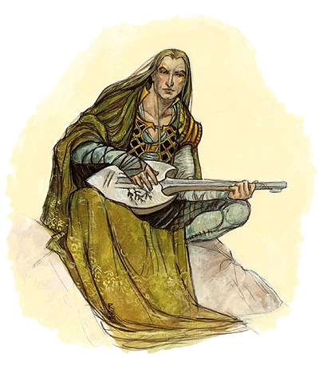

L'histoire du barde
Dans la civilisation celtique de l'Antiquité, le barde est un lettré
et un
fonctionnaire qui tient une place prépondérante dans la société en perpétuant la tradition
orale. Il
appartient à la classe sacerdotale, de même que les druides et les vates. Il se retrouve
dans
tout
le domaine celtique : bardos en gaulois, bard en irlandais, bardd en gallois, barzh ou barth
en
breton et en cornique.
Dans la culture gaélique, un barde (irlandais: bard, gaélique écossais: bàrd) désigne un
poète
qui
compose des poèmes ou des chants en langue gaélique, le plus souvent en s'accompagnant d'un
clàrsach
(harpe gaëlle).
Cette définition est à différencier du terme celtique qui désigne une classe particulière de
la
société antique, et du terme anglais bard, parfois employé pour Shakespeare ou Burns.
Chaque année, le Mòd écossais(un festival gaélique écossais se déroulant au mois d'octobre)
décerne
un prix au meilleur barde ou à la meilleure bardesse
(bana-bhàrd) de la compétition.
Ce terme est toujours utilisé en Russie et en Tchétchénie, parmis les bardes les plus
célèbres
nous pouvons citer Liza Oumarova et Vladimir Vyssotski.